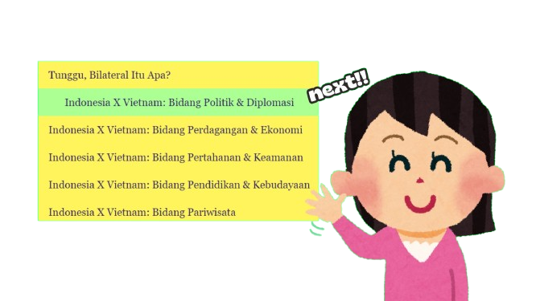
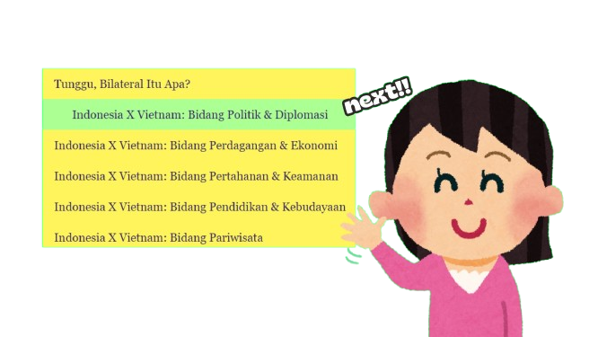

KERJASAMA INTERNASIONAL: INDONESIA X VIETNAM
- Kerjasama bilateral adalah kerjasama antara dua negara untuk mencapai tujuan bersama yang saling menguntungkan. Biasanya, negara-negara ini bekerja sama dalam berbagai bidang, seperti perdagangan, pendidikan, kesehatan, budaya, atau keamanan. Tujuan dari kerjasama ini adalah untuk membantu kedua negara berkembang dan saling mendukung.
- Contohnya, Indonesia bekerja sama dengan Jepang. Jepang membantu membangun infrastruktur seperti jalan dan jembatan di Indonesia, sementara Indonesia menyediakan sumber daya seperti hasil alam untuk Jepang. Contoh lainnya adalah kerjasama di bidang pendidikan, di mana pelajar Indonesia bisa mendapatkan beasiswa untuk belajar di luar negeri, dan sebaliknya.
- Kerjasama ini penting karena tidak semua negara memiliki semua yang mereka butuhkan. Dengan saling bekerja sama, negara-negara ini bisa saling melengkapi dan memberikan manfaat untuk masyarakatnya masing-masing.
- Namun, pada selanjutnya, akan ada satu contoh besar mengenai kerjasama bilateral yang juga membahas apa saja kerjasama yang dilakukan dan upaya peran negara Indonesia dalam mewujudkan kerjasama di berbagai bidang bersama dengan negara Vietnam agar mencapai tujuan bersama.
 
